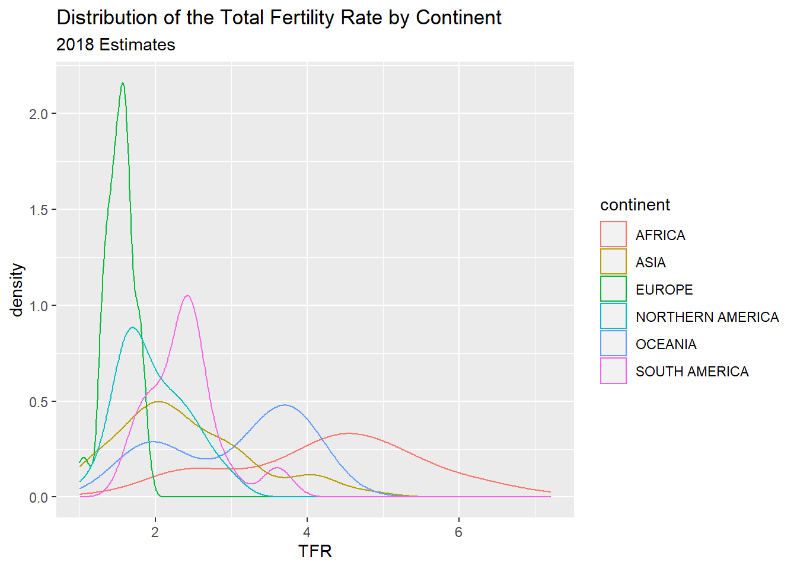
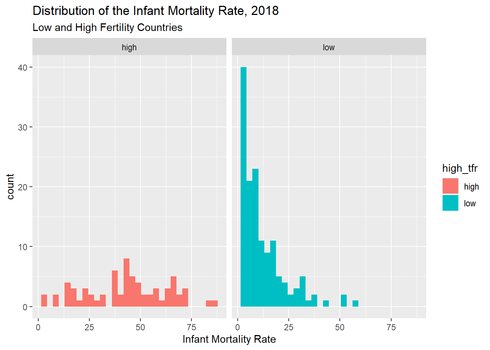
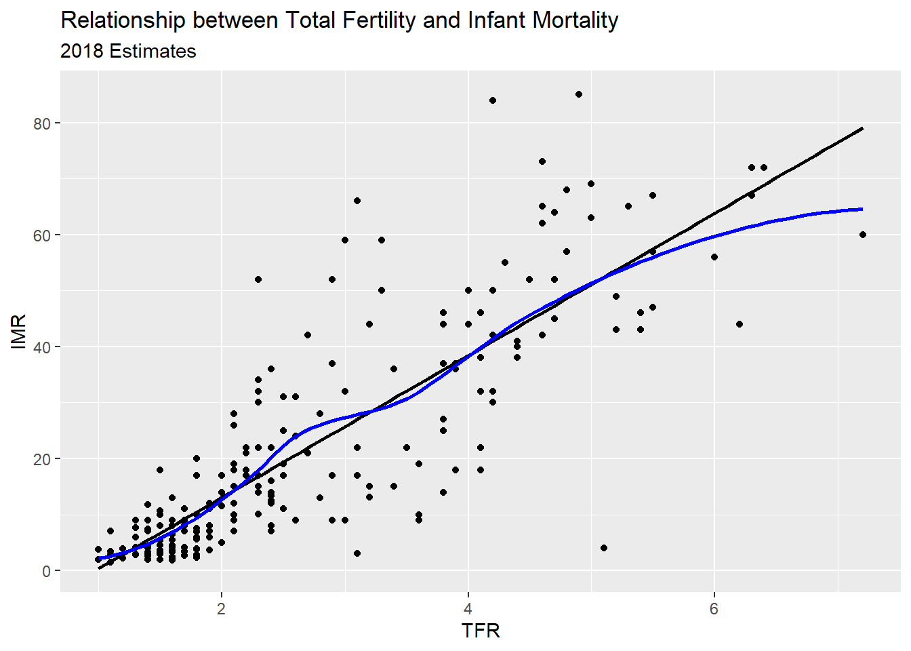
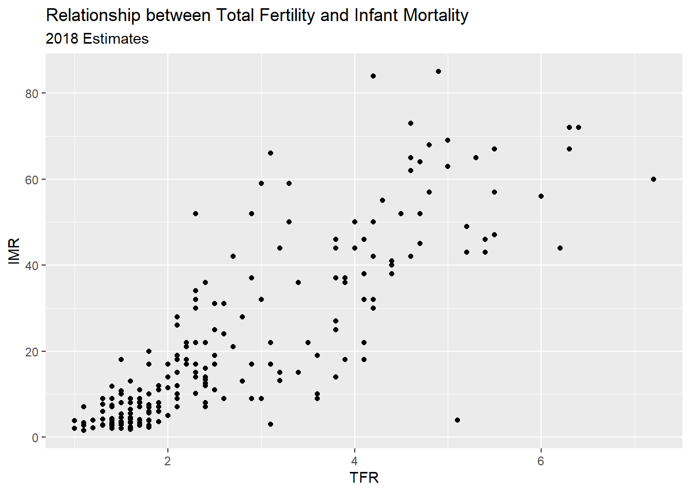
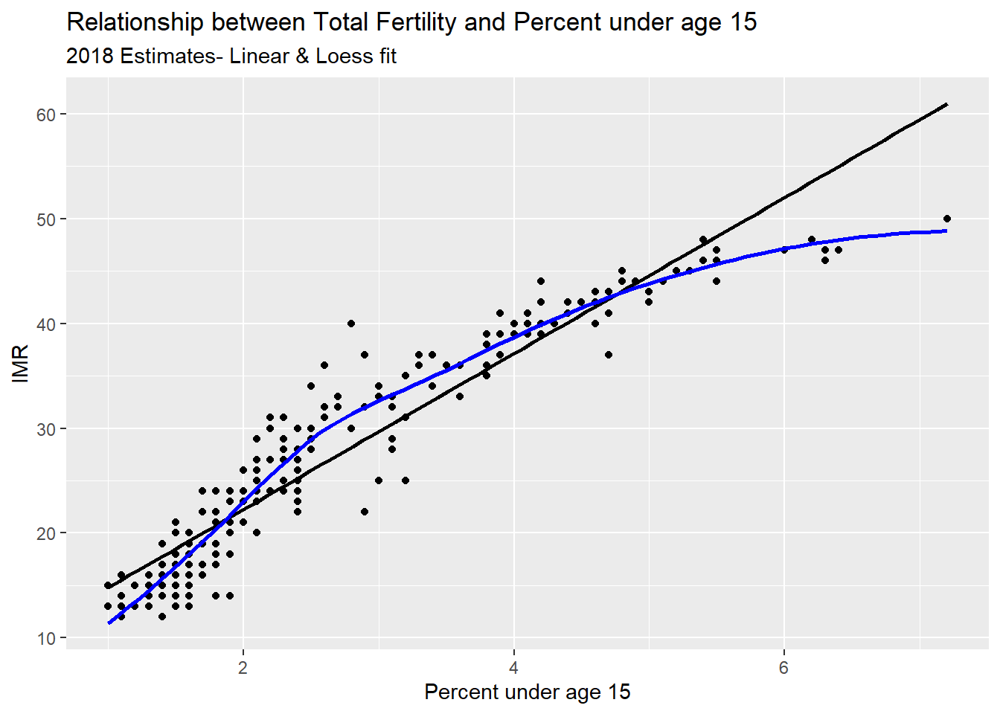

Applied Demographic Data Analysis with R
2020-11-20
Chapter 1 Introduction
1.1 Why a book on statistics for demographers?
Demographers have always been a mixture of sociologists, economists, statisticians, health researchers, and other broad sub-disciples of social science. As such, we bring with us a large amount of baggage from our respective academic life courses, and we often are trained by a wide variety of mentors and professors. It’s my perspective that our interdisciplinary experience is one of our greatest strengths as a group. Given that our training is often in one of a core set of home disciplines, we often have methodological training from said discipline, and this may not be a broad enough perspective to firmly ground us in the types of methods that demographers commonly employ. This is not the fault of the departments that trained us, it’s just a historical fact. So, why am I writing a book on statistics and data analysis aimed at demographers? I will give you three reasons:
Demographers have to go beyond the sample. This is to say that our results and research is generally representative of a larger national or international population, and we do this explicitly in our models.
We demographers don’t use random samples for our analysis. Statistics books the world over are based on assumptions of random sampling and independence, while the data that we often have to, or desire to use, comes more than likely from a data source that was collected using a complex survey design. This is a big deal and we have to have training materials that instill this in our students early on in their careers.
Weird data. As demographers, we often use data from lots of different places and if you were trained up to this point to believe that the linear model is the end-all be-all of statistical inference, I’ve got news for you friends, you’ve been misled. Categorical outcomes, counts, hierarchically structured, longitudinally collected, spatially referenced, just to name a few of such oddities, are ubiquitous in our field, and part of what makes our discipline so cool and interesting to newcomers.
My goal for this book is to take the lessons I’ve learned teaching statistics to a diverse and often cursorily trained group of students who have problems they care about, that they need to bring demographic data to bear upon. This is a challenge, and I have always been a stalwart proponent of teaching statistics and data analysis in a very applied manner. As such, this book won’t be going into rigorous proofs of estimators or devoting pages to expositions of icky algebra; instead it will focus on exploring modern methods of data analysis that in used by demographers every day, but not always taught in our training programs. As someone who has learned much more of these methods by personal exploration than by formal study, I find that many of these methods are absent from the canon of social science statistics, but are both in great demand from people who hire us, and absolutely necessary to the demographer’s analytic toolkit. It’s a major goal of this book to de-mystify the process and to make it accessible to a wide audience, so I will always strive to illustrate the key aspects of the methods described herein, and ground the discussion of methods in applications.
1.2 Why R?
I’ve used R for twenty years. I was also trained in SPSS and SAS along the way, by various mentors. Some tried to get me to learn more general purpose languages like Delphi (of all things) or Perl, or Basic, and I’ve been chastised for not knowing the depths of Python, but R presents a nimble and rigorous platform to do demography. My top three reasons for teaching and using R are:
It’s free - This is important, because, why should we pass along more costs to people, especially our students? This also make R code accessible to people, worldwide.
It’s the hotbed of methodological development. The R ecosystem has thousands of packages that represent the bleeding edge of data analysis, visualization and data science. This makes R attractive because it can pivot quickly to adopt new methods, which often lag in their development in other environments.
It has a supportive community of users. While there are some debates over how friendly some R users are to new users, overall, after spending 20 years in the R community, I’ve personally assisted hundreds of users, and been personally helped by many others. The open source nature of R lends itself to sharing of ideas and collaboration between users.
1.2.1 My assumptions in this book
In statistics we always make assumptions, often these are wrong, but we adapt to our mistakes daily. My assumptions about who is reading this book are:
You are interested in learning more about R.
You are likely a student or professional interested in demography or population research.
You have likely been exposed to other statistical platforms and are curious about R, in conjunction with 1 and 2 above.
You may be an avid R user from another strange and exotic discipline, but are interested in how demographers do research.
You want to see how to do things instead of being bombarded with theoretical and often unnecessary gate-keeping mathematical treatments of statistical models.
I think if any of these assumptions are true, you’re in the right place. That being said, this book is not a review of all of statistics, nor is it an encyclopedic coverage of the R language and ecosystem. I image the latter being on the same scale of hopelessness as the search for the Holy Grail or the fountain of youth. People have died for such fool hearty quests, I’m not falling on my sword here folks.
1.3 Welcome to R.
If you’re coming to R from SAS, there is no data step. There are no procs. The SAS and R book Kleinman and Horton (2014) is very useful for going between the two programs.
If you’re coming from SPSS and you’ve been using the button clicking method, be prepared for a steep learning curve. If you’ve been writing syntax in SPSS, you’re at least used to having to code. There’s a good book for SAS and SPSS users by Bob Meunchen at the Univ. of Tennessee here, which may be of some help.
Stata users have fewer official publications at their fingertips to ease the transition to R, but I have always thought that the two were very similar. If you search the internet for information related to R and Stata, you will find a myriad of (somewhat dated) blog posts on which one is better for “data science”, how to “get started” with either and so forth. What is really needed is a text similar to Kleinman and Horton (2014) which acts as a crosswalk between the two programs.
1.4 R and Rstudio
The Rgui is the base version of R, but is not very good to program in. Rstudio is much better, as it gives you a true integrated development environment (IDE), where you can write code in one window, see results in others, see locations of files, and see objects you’ve created. To get started, you should download the R installer for your operating system. Windows and Mac have installer files, and Linux users will install R using their preferred package manager.
Download R from CRAN. If you’re on Windows, I would also highly recommend you install Rtools, because it gives you c++ and Fortran compilers, which many packages need to be installed.
Rstudio can be downloaded for free here.
I would recommend installing the base R program from CRAN first then (for Windows users) install Rtools, then install Rstudio, in that order.
Again, each operating system has its own binary for Rstudio, so pick the one that matches your operating system. Rstudio typically has 4 sub-windows open at any given time. Here is what mine looks like:
Rstudio
In mine, the top left window is where I have a script file ( in this case the .Rmd file that is part of this book), the bottom left window is the command line, where you can type commands directly into R. The top right window is currently showing my R environment, with a few objects that are currently saved in memory. The bottom right window shows the files in the current directory, and you can do typical file operations to them (rename, delete, move) in this window.
1.4.1 R file types
.R files R uses a basic text file with the .R extension. This type of file is useful if you’re going to write a function or do some analysis and don’t want to have formatted output or text. You can use these files for everything, but they are limited in their ability to produce reports and formatted output, so I recommend people work with R Markdown files instead.
.Rmd files Rstudio uses a form of the markdown formatting language, called R Markdown, for creating formatted documents that include code, tables, figures and statistical output. This book is written in R Markdown!
R Markdown is nice for lots of reasons, such as the ability to insert latex equations into documents.
\[ {y_i \sim Normal (x'\beta, \sigma_2)} \] or to include output tables directly into a document:
library(broom)
library(pander)
fit<-lm(imr~tfr+pcturban+pctlt15_2018+pctwomcontra_all, prb)
pander(broom::tidy(fit))| term | estimate | std.error | statistic | p.value |
|---|---|---|---|---|
| (Intercept) | 6.209 | 6.551 | 0.9478 | 0.3446 |
| tfr | 3.392 | 2.006 | 1.691 | 0.09274 |
| pcturban | -0.0923 | 0.04553 | -2.028 | 0.04425 |
| pctlt15_2018 | 0.8699 | 0.2441 | 3.564 | 0.0004798 |
| pctwomcontra_all | -0.2114 | 0.06018 | -3.512 | 0.0005757 |
This allows you to make tables in Rmarkdown without having to do non-repeatable tasks in Word or some other program. You can basically do your entire analysis, or a sideshow for a presentation, or an entire paper, including bibliography, in Rstudio.
1.4.2 R projects
Rstudio allows you to create a R project, which basically sets up a specific location to store R code for a given project you may be doing. For instance, this book is a single R project, which helps me organize all the chapters, bibliographies, figures, etc.
R projects also allow you to use version control, including Git and SVN, to collaborate and share code and data with others.
1.4.3 R data files
R allows you to read and write its own native data formats, as well as read and write text formatted files and data files from other statistical software packages. Two native R data formats are .rds and .rdata formats. .rds files allow you to save a single R object to an external files, while .rdata files allow you to save one or more objects to a file.
Here is a short example of doing this, where I create 2 vectors, x and y and save them.
I can also load these into R again:
## [1] 1 2 3Standard methods for importing text data such as comma separated value or tab delimited files can be read into R using read.csv() or read.table() and similar writing functions are available.
To read in a dataset from another statistical package, I recommend using the haven package. It allows you to read and write SAS (both sas7bdat and xpt files), Stata, SPSS (both .por and .sav files).
For example, here I write out a dataframe containing x and y from above to a SAS version 7 file:
## x y
## 1 1 4
## 2 2 5
## 3 3 6I will describe dataframes more later in the chapter.
R also has packages for reading/writing such data formats as JSON, ESRI Shapefiles, Excel spreadsheets, Google Spreadsheets, DBF files, in addition to tools for connecting to SQL databases, and for interfacing with other statistics packages, such as Mplus, OpenBUGS, WinBUGS and various Geographic Information Systems.
1.5 Getting help in R
I wish I had a nickel for every time I ran into a problem trying to do something in R, that would be a lot of nickles. Here are some good tips for finding help in R:
- If you know the name of a function you want to use, but just need help using it, try
?
?lm
- If you need to find a function to do something, try
??
??"linear model"
- You can also search the history of other R users questions by tapping into the RSiteSearch website, which is an archive of user questions to the R list serve. This can be used by tying
RSiteSearch()
RSiteSearch("heteroskedasticity")
Speaking of which, there are multiple R user email list serves that you can ask questions to, or subscribe to daily digests from. These typically want an example of what you’re trying to do, referred to as a reproducible example. I wish I also had nickles for each question I’ve asked and answered on these forums.
A good source for all things programming is the statistics branch of Stack Exchange, which has lots of contributed questions and answers, although many answers are either very snarky or wrong or for an old version of a library, so caveat emptor.
Your local R guru or R user group. You would be surprised at how many people are R users, there may be one just down the hall, or in the cubicle next door. I relish the opportunity to talk to other R users, mostly because, even though I’ve used R for more than 20 years, I still learn so much by talking to others about how they use R.
Lastly, I want to be clear that there are often more than one way to do everything in R. Simple things like reading and writing a CSV data file can be accomplished by any of a handful of different functions found in different packages. If someone tells you that there is only one way to do something, they are usually wrong in such a statement, regarding R at least.
1.6 R packages
R uses packages to store functions that do different types of analysis, so we will need to install lots of different packages to do different things. There are over 20,000 different packages currently for R. These are hosted on one of a number of repositories, such as the Comprehensive R Archive Network, or CRAN, which is the official repository for R packages. Other locations where authors store packages include R-Forge and BioconductoR. Many authors host packages in Github repositories, especially for development purposes.
Packages are often organized into Task Views, which CRAN uses to organize packages into thematic areas. You can find a list of these Task Views here. There is not a task view for Demography, but there are ones for the Social Sciences, Econometrics, and Spatial Data to name a few. Task views allow users to download a lot of thematically linked packages in a single command, through the package ctv, or Cran Task Views. You can install this package by typing:
install.packages("ctv")
into Rstudio. Then you have to load the package by using the library() command:
library(ctv)
which gives you access to the functions in that package. You don’t need to install the package again, unless you update your R software, but each time you start a new session (i.e. open Rstudio), you will have to load the library again. If you want to install all of the packages in the Social Science task view, you would type:
install.views("SocialSciences")
into R and it will install all of the packages under that task view, as of the writing of this sentence, include over 80 packages.
I strongly recommend you install several packages prior to us beginning to use R, so you will not be distracted by this later. I’ve written a short script on my Github repository and you can use it by running:
This will install a few dozen R packages that are commonly used for social science analysis and some other packages I find of use.
You only have to install a package once, but each time you start a R session, you must load the package to use its functions. You should also routinely update your installed packages using update.packages(ask=F). This will update any packages that have new versions on CRAN. These often will contain bug fixes and new features. On CRAN, each package will have a README file that tells what has changed in the various versions. Here is one for one of my favorite packages tidycensus.
1.6.1 Functions within packages
Each package will have one or more functions within it, each doing a specific task. The default way to access all functions within a given package is to use the command library(packagename) to access the functions. Once loaded, all the functions will be accessible to you. Sometimes, different packages have functions with the same name, for example the base R library has the function lag(), which lag’s a time series, the dplyr library also has a function lag(), which does a similar task, but with different function arguments. If you have the dplyr library loaded, R will default to use its lag() function. If you want to access a specific function within a specific library, sometimes it is safest to use the library::function() syntax. So if I want to use base R’s lag() function, I could do
stats::lag()
to access that function specifically. How do you know when this happens? When you load a library, you will often see messages from R that functions have conflicts. For example, if I load dplyr, I see:
Conflict messages
As you use R more, you will learn which packages have conflicts, and often the developers of the packages will do this and rename the commonly conflicting functions. For example, the function to recode variables in the car package, car::recode() was renamed to car::Recode() to avoid conflicts with the dplyr::recode() function, as both are often used in the same analysis.
1.6.1.1 More notes on functions
Functions in R are bits of code that do something, what they do depends on the code within them. For instance, the median() function’s underlying code can be seen by:
## A single object matching 'median.default' was found
## It was found in the following places
## package:stats
## registered S3 method for median from namespace stats
## namespace:stats
## with value
##
## function (x, na.rm = FALSE, ...)
## {
## if (is.factor(x) || is.data.frame(x))
## stop("need numeric data")
## if (length(names(x)))
## names(x) <- NULL
## if (na.rm)
## x <- x[!is.na(x)]
## else if (any(is.na(x)))
## return(x[FALSE][NA])
## n <- length(x)
## if (n == 0L)
## return(x[FALSE][NA])
## half <- (n + 1L)%/%2L
## if (n%%2L == 1L)
## sort(x, partial = half)[half]
## else mean(sort(x, partial = half + 0L:1L)[half + 0L:1L])
## }
## <bytecode: 0x00000000163f1470>
## <environment: namespace:stats>This seems like a lot, I know, but it allows you to see all of the code under the hood of any function. Obviously, the more complicated the function, the more complicated the code. For instance, I can write my own simple function to find the mean of a sample:
mymean<-function(x, na.rm=FALSE){
sx<-sum(x, na.rm=FALSE)
nx<-length(x)
mu<-sx/nx
mu
}
mymean(x = c(1,2,3))## [1] 2This function only includes the basic machinery to calculate the arithmetic mean of a vector \(x\). The function has 2 arguments, x and na.rm. All R functions have one or more arguments that users must enter for the function to operate. Some arguments are required, while some are optional, also some arguments, such as the na.rm=FALSE, have default values. As mentioned earlier, to see all the information for a function’s arguments, use the help operator, ?. For example ?mean will show you the help documents for the mean() function
Mean Function Help
When using a new function, it’s always advised to check out the help file to see all the arguments the function can take, because this is where you can choose alternative specifications for models and methods. These help files also contain the original citations for methods, so you can immediately check the source of the algorithms. The help files also contain a working example of how to use the function on data contained in R.
1.7 Your R user environment
When you begin an R session (generally by opening Rstudio) you will begin in your home directory. This is traditionally, on Windows, at 'C:/Users/yourusername/Documents' on Mac at '/Users/yourusername', and on Linux at '/users/yourusername'. There are files you can add to your home directory to specify starting options for R.
You can find information on setting up .Rprofile and .Renviron files on CRAN’s website. This allows you to setup packages that load every time R starts, to save API keys and other various options. These are completely optional and many R users never touch these.
If you’re not sure where you are you can type getwd(), for get working directory, and R will tell you:
If you don’t like where you start, you can change it, by using setwd(), to set your working directory to a new location.
R projects will typically set the home folder for the project at the directory location of the project, so files associate with the project will always be in the same place. You can set this at the beginning of your R code file to ensure the code will look for data in a specific location.
1.8 Some Simple R examples
Below we will go through a simple R session where we introduce some concepts that are important for R. I’m running these in an Rstudio session, in the
1.8.1 R is a calculator
## [1] 10## [1] -4## [1] 21## [1] 0.4285714## [1] 9## [1] 27## [1] -0.8472979## [1] 1.535063## [1] 0.4155719R allows users to write custom functions as well. In general, if you find yourself writing the same code over and over again, you should probably just write a function and save it to your local user environment.
For example a very simple function is given below, it takes a variable \(x\) as an argument, and then exponentiates the value of the variable.
## [1] 1.648721## [1] 0.9048374You may want to save this function for future use, so you don’t have to write it over again. In general, this is why people write R packages, to store custom functions, but you can also save the function to an R script. One such way to do this is to use the dump() command.
One way to load this function when you want to use it is to use the source() command, which loads any code in a given R script.
Which will load this function into your local environment and you can use it. If you are interested in writing your own packages, I would highly recommend reading Wickham (n.d.).
1.8.1.1 Variables and objects
In R we assign values to objects (object-oriented programming). These can generally have any name, but some names are reserved for R. For instance you probably wouldn’t want to call something ‘mean’ because there’s a ‘mean()’ function already in R. For instance:
## [1] 10## [1] 21## [1] 3.044522The [1] in the answer refers to the first element of a vector, which brings us to…
1.8.1.2 Vectors
R thinks many objects are like a matrix, or a vector, meaning a row or column that contains either numbers or characters. One of R’s big selling points is that much of it is completely vectorized. Meaning, I can apply an operation along all elements of a vector without having to write a loop.
For example, if I want to multiply a vector of numbers by a constant, in SAS, I could do:
for (i in 1 to 5)
x[i]<-y[i]*5
end;
but in R, I can just do:
## [1] 21 28 35 42 49R is also very good about using vectors, let’s say I wanted to find the third element of x:
## [1] 5or if I want to test if this element is 10
## [1] FALSE## [1] TRUEor is it larger than another number:
## [1] TRUEor is any element of the whole vector greater than 3
## [1] FALSE TRUE TRUE TRUE TRUEIf you want to see what’s in an object, use str(), for structure
## num [1:5] 3 4 5 6 7and we see that x is numeric, and has the values that we made.
We can also see different characteristics of x
## [1] 5## [1] TRUE## [1] FALSE## [1] FALSE FALSE FALSE FALSE FALSE## [1] 3 4 5 6 7 NA## [1] FALSE FALSE FALSE FALSE FALSE TRUE1.8.1.3 Replacing elements of vectors
Above, we had a missing value in X, let’s say we want to replace it with another value. He we will use basic conditional logic, which exists in any programming language. The ifelse() function will evaluate a test statement, and depending on if that statement is true, it will assign a value, if the statement is false, R will assign another value. Here, we replace the missing value with \(\sqrt{7.2}\), and leave the other values as they are.
## [1] 3.000000 4.000000 5.000000 6.000000 7.000000 2.6832821.8.2 Variable types
R stores data differently depending on the type of information contained. Common variables types in R are numeric, character, integer and factor.
Numeric variables are just that, numbers. They can be whole numbers or decimal values. The best way to see if a variable is numeric is to use is.numeric(x), and R will return TRUE if the variable is numeric and FALSE if it is not.
## [1] TRUELikewise, you can use is.character(), is.integer(), and is.factor to identify if a variable is of a given type. The class() function will also do this more generally:
## [1] "numeric"Character and factor variables often store the same kind of information, and R (until recently) would always convert character variables to factors when data were read into R. This is the option getOption("stringsAsFactors"), which used to default to True, but has recently changed. What’s the difference you ask? Character variables store information on strings, or text. This is one way to code categorical variables that are strings. Factors, on the other hand can store strings OR numbers as categorical variables, and can be ordered or unordered. Factors also allow for specific categories of the variable to be considered as reference categories, as are often used in many statistical procedures. Factor variables have “levels” which are the different values of the categorical variable, this implied a more complicated structure than simple character variables, which lack these qualities.
You can manipulate variables of one type into another, with some notable things to watch out for.
Here are some examples:
## [1] "numeric"We can convert this to a character vector using as.character()
## [1] "1" "2" "3" "4"Likewise, we can convert it to a factor type:
## [1] 1 2 3 4
## Levels: 1 2 3 4## [1] "factor"## [1] FALSEand as an ordered factor:
## [1] 1 2 3 4
## Levels: 1 < 2 < 3 < 41.8.2.1 Dataframes
Traditionally, R organizes variables into data frames, these are like a spreadsheet. The columns can have names, and the dataframe itself can have data of different types.
Here we make a short data frame with three columns, two numeric and one factor:
mydat<-data.frame(
x=c(1,2,3,4,5, 6, 7, 8),
y=c(10, 20, 35, 57, 37, 21, 23, 25),
group=factor(c("A", "A" ,"A", "B", "B", "C","C","C"))
)
#See the size of the dataframe
dim(mydat)## [1] 8 3## x y group
## 1 1 10 A
## 2 2 20 A
## 3 3 35 A
## 4 4 57 B
## 5 5 37 B
## 6 6 21 C
## 7 7 23 C
## 8 8 25 C1.8.2.2 Accessing variables in dataframes
R has a few different ways to get a variable from a data set. One way is the $ notation, used like dataset$variable, and another is to provide the column index or name of the variable. These three methods are illustrated below. The first tells R to get the variable named group from the data. The second tells R to get the column named group from the data, and the third tells R to get the third column from the data.
## [1] A A A B B C C C
## Levels: A B C## group
## 1 A
## 2 A
## 3 A
## 4 B
## 5 B
## 6 C
## 7 C
## 8 C## [1] A A A B B C C C
## Levels: A B CThe names() function is very useful for seeing all the column names of a dataset, without having to print any of the data.
## [1] "x" "y" "group"R has several useful function for previewing the contents of a dataframe or variable. The head() function shows the first 6 observations of a dataframe or variable, and tail() shows the last 6 observations. You can also show a custom number of observations by using the n= argument in either function. These are illustrated below:
## x y group
## 1 1 10 A
## 2 2 20 A
## 3 3 35 A
## 4 4 57 B
## 5 5 37 B
## 6 6 21 C## x y group
## 1 1 10 A
## 2 2 20 A## [1] A A A B B C
## Levels: A B C## x y group
## 3 3 35 A
## 4 4 57 B
## 5 5 37 B
## 6 6 21 C
## 7 7 23 C
## 8 8 25 C## x y group
## 7 7 23 C
## 8 8 25 C## [1] A B B C C C
## Levels: A B C1.8.3 Nicer looking tables
R can also produce nicely formatted HTML and LaTeX tables. There are several packages that do this, but the knitr package has some basic table creation functions that do a good job for simple tables.
| x | y | group |
|---|---|---|
| 1 | 10 | A |
| 2 | 20 | A |
| 3 | 35 | A |
| 4 | 57 | B |
| 5 | 37 | B |
| 6 | 21 | C |
| 7 | 23 | C |
| 8 | 25 | C |
Much more advanced tables can be created using the gt package Iannone, Cheng, and Schloerke (2020), which allows for highly customized tables.
##
## Attaching package: 'dplyr'## The following objects are masked from 'package:stats':
##
## filter, lag## The following objects are masked from 'package:base':
##
## intersect, setdiff, setequal, union| My simple gt table | ||
|---|---|---|
| With a subtitle | ||
| x | y | group |
| 1 | 10 | A |
| 2 | 20 | A |
| 3 | 35 | A |
| 4 | 57 | B |
| 5 | 37 | B |
| 6 | 21 | C |
| 7 | 23 | C |
| 8 | 25 | C |
1.9 Real data example
Now let’s open a ‘real’ data file. This is the 2018 World population data sheet from the Population Reference Bureau. It contains summary information on many demographic and population level characteristics of nations around the world in 2018.
I’ve had this entered into a Comma Separated Values file by some poor previous research assistant of mine and it lives happily on Github now for all the world to see. CSV files are a good way to store data coming out of a spreadsheet, because R can read them without any other packages. R can also read Excel files, but it requires external packages to do so, such as readxl.
I can read it from Github directly by using a function in the readr library, or with the base R function read.csv(), both accomplish the same task.
prb <- read.csv(file = "https://raw.githubusercontent.com/coreysparks/r_courses/master/2018_WPDS_Data_Table_FINAL.csv",
stringsAsFactors = T)That’s handy. If the file lived on our computer in your working directory, I could read it in like so:
Same result.
The haven library Wickham and Miller (2020) can read files from other statistical packages easily, so if you have data in Stata, SAS or SPSS, you can read it into R using those functions, for example, the read_dta() function reads Stata files, read_sav() to read SPSS data files.
1.10 Basic Descriptive analysis of data
One of the key elements of analyzing data is the initial descriptive analysis of it. In subsequent chapters, I will go into more depth about this process, but for now, I want to illustrate some simple but effective commands for summarizing data.
1.10.1 Dataframe summaries
The summary() function is very useful both in terms of producing numerical summaries of individual variables, but also for shows summaries of entire dataframes. Its output differs based on the type of variable you give it, for character variables it does not return any summary. For factor variables, it returns a frequency table, and for numeric variables, it returns the five number summary plus the mean.
## CARIBBEAN CENTRAL AMERICA CENTRAL ASIA EAST ASIA
## 17 8 5 8
## EASTERN AFRICA EASTERN EUROPE MIDDLE AFRICA NORTHERN AFRICA
## 20 10 9 7
## NORTHERN AMERICA NORTHERN EUROPE OCEANIA SOUTH AMERICA
## 2 11 17 13
## SOUTH ASIA SOUTHEAST ASIA SOUTHERN AFRICA SOUTHERN EUROPE
## 9 11 5 15
## WESTERN AFRICA WESTERN ASIA WESTERN EUROPE
## 16 18 9## AFRICA ASIA EUROPE NORTHERN AMERICA
## 57 51 45 27
## OCEANIA SOUTH AMERICA
## 17 13## Min. 1st Qu. Median Mean 3rd Qu. Max.
## 1.000 1.600 2.300 2.709 3.750 7.200I find this function to be very useful when I’m initially exploring a data set, so I can easily see the min/max values of a variable. There are many alternatives to this base function, including psych::describe(), Hmisc::describe(), and skimr::skim(), all of which produce summaries of dataframes or variables
## vars n mean sd median trimmed mad min max range skew kurtosis se
## [ reached 'max' / getOption("max.print") -- omitted 27 rows ]## prb
##
## 6 Variables 210 Observations
## --------------------------------------------------------------------------------
## continent
## n missing distinct
## 210 0 6
##
## lowest : AFRICA ASIA EUROPE NORTHERN AMERICA OCEANIA
## highest: ASIA EUROPE NORTHERN AMERICA OCEANIA SOUTH AMERICA
##
## Value AFRICA ASIA EUROPE NORTHERN AMERICA
## Frequency 57 51 45 27
## Proportion 0.271 0.243 0.214 0.129
##
## Value OCEANIA SOUTH AMERICA
## Frequency 17 13
## Proportion 0.081 0.062
## --------------------------------------------------------------------------------
## region
## n missing distinct
## 210 0 19
##
## lowest : CARIBBEAN CENTRAL AMERICA CENTRAL ASIA EAST ASIA EASTERN AFRICA
## highest: SOUTHERN AFRICA SOUTHERN EUROPE WESTERN AFRICA WESTERN ASIA WESTERN EUROPE
## --------------------------------------------------------------------------------
## country
## n missing distinct
## 210 0 210
##
## lowest : Afghanistan Albania Algeria Andorra Angola
## highest: Vietnam Western Sahara Yemen Zambia Zimbabwe
## --------------------------------------------------------------------------------
## pop2018
## n missing distinct Info Mean Gmd .05 .10
## 210 0 142 1 36.29 59.09 0.10 0.20
## .25 .50 .75 .90 .95
## 1.30 7.00 25.43 65.21 117.95
##
## lowest : 0.0 0.1 0.2 0.3 0.4, highest: 209.4 265.2 328.0 1371.3 1393.8
## --------------------------------------------------------------------------------
## cbr
## n missing distinct Info Mean Gmd .05 .10
## 210 0 37 0.998 20.34 11.47 9.0 9.0
## .25 .50 .75 .90 .95
## 11.0 18.5 28.0 35.1 39.0
##
## lowest : 7 8 9 10 11, highest: 40 41 43 45 48
## --------------------------------------------------------------------------------
## cdr
## n missing distinct Info Mean Gmd .05 .10
## 210 0 16 0.986 7.676 3.061 4 5
## .25 .50 .75 .90 .95
## 6 7 9 11 13
##
## lowest : 1 2 3 4 5, highest: 12 13 14 15 16
##
## Value 1 2 3 4 5 6 7 8 9 10 11
## Frequency 1 4 5 8 25 37 29 26 25 18 14
## Proportion 0.005 0.019 0.024 0.038 0.119 0.176 0.138 0.124 0.119 0.086 0.067
##
## Value 12 13 14 15 16
## Frequency 5 6 5 1 1
## Proportion 0.024 0.029 0.024 0.005 0.005
## --------------------------------------------------------------------------------| Name | prb |
| Number of rows | 210 |
| Number of columns | 27 |
| _______________________ | |
| Column type frequency: | |
| factor | 3 |
| numeric | 24 |
| ________________________ | |
| Group variables | None |
Variable type: factor
| skim_variable | n_missing | complete_rate | ordered | n_unique | top_counts |
|---|---|---|---|---|---|
| continent | 0 | 1 | FALSE | 6 | AFR: 57, ASI: 51, EUR: 45, NOR: 27 |
| region | 0 | 1 | FALSE | 19 | EAS: 20, WES: 18, CAR: 17, OCE: 17 |
| country | 0 | 1 | FALSE | 210 | Afg: 1, Alb: 1, Alg: 1, And: 1 |
Variable type: numeric
| skim_variable | n_missing | complete_rate | mean | sd | p0 | p25 | p50 | p75 | p100 | hist |
|---|---|---|---|---|---|---|---|---|---|---|
| pop2018 | 0 | 1.00 | 36.29 | 139.62 | 0.0 | 1.30 | 7.0 | 25.43 | 1393.8 | ▇▁▁▁▁ |
| cbr | 0 | 1.00 | 20.34 | 10.24 | 7.0 | 11.00 | 18.5 | 28.00 | 48.0 | ▇▅▃▃▁ |
| cdr | 0 | 1.00 | 7.68 | 2.74 | 1.0 | 6.00 | 7.0 | 9.00 | 16.0 | ▂▇▆▂▁ |
| rate_inc | 0 | 1.00 | 1.27 | 1.06 | -0.7 | 0.30 | 1.2 | 2.20 | 3.8 | ▇▇▇▆▂ |
| netmig | 0 | 1.00 | 0.31 | 6.85 | -21.0 | -2.00 | 0.0 | 2.00 | 32.0 | ▁▇▃▁▁ |
| projpop2030 | 0 | 1.00 | 40.81 | 149.97 | 0.0 | 1.33 | 7.9 | 33.10 | 1532.3 | ▇▁▁▁▁ |
| projpop2050 | 0 | 1.00 | 46.91 | 157.42 | 0.0 | 1.42 | 9.1 | 40.95 | 1680.1 | ▇▁▁▁▁ |
| imr | 1 | 1.00 | 22.10 | 20.53 | 1.5 | 6.00 | 14.0 | 36.00 | 85.0 | ▇▂▂▁▁ |
| tfr | 0 | 1.00 | 2.71 | 1.34 | 1.0 | 1.60 | 2.3 | 3.75 | 7.2 | ▇▃▃▁▁ |
| gnigdp | 21 | 0.90 | 19804.30 | 21208.36 | 710.0 | 4490.00 | 12880.0 | 27400.00 | 128060.0 | ▇▂▁▁▁ |
| pcturban | 0 | 1.00 | 60.03 | 23.61 | 13.0 | 41.00 | 61.5 | 78.75 | 100.0 | ▅▆▇▇▆ |
| popdens | 7 | 0.97 | 9413.00 | 74675.11 | 52.0 | 423.00 | 859.0 | 2150.00 | 1032235.0 | ▇▁▁▁▁ |
| pctwomcontra_all | 43 | 0.80 | 51.27 | 21.48 | 4.0 | 33.50 | 55.0 | 67.50 | 88.0 | ▃▅▅▇▅ |
| pctwomcontra_mod | 46 | 0.78 | 43.09 | 21.34 | 2.0 | 24.00 | 44.5 | 60.00 | 84.0 | ▆▇▇▇▅ |
| pctmalehiv | 74 | 0.65 | 1.61 | 3.36 | 0.1 | 0.20 | 0.5 | 1.22 | 19.3 | ▇▁▁▁▁ |
| pctfemhiv | 74 | 0.65 | 2.28 | 5.54 | 0.1 | 0.10 | 0.3 | 1.60 | 35.1 | ▇▁▁▁▁ |
| e0male | 2 | 0.99 | 70.04 | 7.57 | 50.0 | 65.00 | 71.0 | 75.25 | 82.0 | ▂▃▅▇▆ |
| e0female | 2 | 0.99 | 74.78 | 8.16 | 52.0 | 69.00 | 77.0 | 80.25 | 88.0 | ▁▃▃▇▅ |
| e65male | 11 | 0.95 | 15.14 | 2.53 | 10.0 | 13.00 | 15.0 | 17.00 | 20.0 | ▃▇▅▅▃ |
| e65female | 11 | 0.95 | 17.51 | 3.18 | 10.0 | 15.00 | 17.0 | 20.00 | 24.0 | ▁▇▇▇▃ |
| pctlt15_2018 | 0 | 1.00 | 27.51 | 10.59 | 12.0 | 18.00 | 25.5 | 36.75 | 50.0 | ▇▆▅▅▃ |
| pctlt15_2050 | 11 | 0.95 | 20.93 | 7.43 | 11.0 | 15.00 | 18.0 | 27.00 | 43.0 | ▇▃▂▂▁ |
| pct65p_2018 | 0 | 1.00 | 8.93 | 6.23 | 1.0 | 4.00 | 7.0 | 14.00 | 28.0 | ▇▃▂▂▁ |
| pct65p_2050 | 11 | 0.95 | 16.92 | 9.36 | 3.0 | 8.00 | 17.0 | 24.50 | 36.0 | ▇▆▅▇▂ |
The skimr::skim() function is very good at doing summaries of both numeric and categorical data, while the other functions are perhaps best suited to numeric data.
The summary() function, as well as the other three functions in other packages can be used on a single variable within a dataframe as well, or on a simple vector:
## Min. 1st Qu. Median Mean 3rd Qu. Max.
## 1.000 1.600 2.300 2.709 3.750 7.200## 1 2 3 4
## 1 1 1 1| Name | prb$tfr |
| Number of rows | 210 |
| Number of columns | 1 |
| _______________________ | |
| Column type frequency: | |
| numeric | 1 |
| ________________________ | |
| Group variables | None |
Variable type: numeric
| skim_variable | n_missing | complete_rate | mean | sd | p0 | p25 | p50 | p75 | p100 | hist |
|---|---|---|---|---|---|---|---|---|---|---|
| data | 0 | 1 | 2.71 | 1.34 | 1 | 1.6 | 2.3 | 3.75 | 7.2 | ▇▃▃▁▁ |
From this summary, we see that the mean is 2.7085714, there is one country missing the Total fertility rate variable. The minimum is 1 and the maximum is 7.2 children per woman.
1.10.2 Frequency tables
A basic exploration of data, especially if your data have categorical or nominal variables, includes the extensive use of frequency tables. If you’re simply looking at the number of observations in each level of a categorical variable, or using frequency tables to aggregate data, they are some of the most useful basic statistical summaries around. The basic function for constructing simple tables is table() in base R. More sophisticated table construction is allowed in xtabs()
Let’s have a look at some descriptive information about the data:
##
## AFRICA ASIA EUROPE NORTHERN AMERICA
## 57 51 45 27
## OCEANIA SOUTH AMERICA
## 17 13Frequency of TFR over 3 by continent:
##
## AFRICA ASIA EUROPE NORTHERN AMERICA OCEANIA SOUTH AMERICA
## FALSE 11 40 45 27 7 12
## TRUE 46 11 0 0 10 1Two things to notice in the above code, first we have to use the $ operator to extract each variable from the prb dataframe. Second, the I() operator is used. This is honestly one of my favorite things in base R. I() is the indicator function, it evaluates to TRUE or FALSE depending on the argument inside of it. This also allows for fast construction of binary variables on the fly in any function. Here’s another example:
## [1] FALSE FALSE FALSE FALSE TRUE TRUE##
## FALSE TRUE
## 4 2So we see how this works, I checks if x is greater than 5, if it is, I() returns TRUE. When we feed this to table(), we can count up the TRUE and FALSE responses.
Later in the book, we will see how to employ the xtabs() function to quickly aggregate data from individual level to aggregate level.
1.10.3 More basic statistical summaries
Now, we will cover some basic descriptive statistical analysis including basic measures of central tendency and variability.
1.10.4 Measures of central tendency
We can use graphical methods to describe what data ‘look like’ in a visual sense, but graphical methods are rarely useful for comparative purposes. In order to make comparisons, you need to rely on a numerical summary of data vs. a graphical one.
Numerical measures tell us a lot about the form of a distribution without resorting to graphical methods. The first kind of summary statistics we will see are those related to the measure of central tendency. Measures of central tendency tell us about the central part of the distribution
1.10.5 Mean and median
Here is an example from the PRB data.
## [1] 2.708571Whoops! What happened? This means that R can’t calculate the mean because there’s a missing value, which we saw before. We can tell R to automatically remove missing values by:
## [1] 2.708571Which works without an error. Many R functions will fail, or do listwise deletion of observations when NAs are present, so it’s best to look at the documentation for the function you’re wanting to use to see what it’s default na action is. The mean() function defaults to na.rm=FALSE, which indicates that it does not remove missing values by default.
We can also calculate the median TFR
## [1] 2.31.10.6 Measures of variation
One typical set of descriptive statistics that is very frequently used is the so-called five number summary and it consists of : the Minimum, lower quartile, median, upper quartile and maximum values. This is often useful if the data are not symmetric or skewed. This is what you get when you use the fivenum() function, or we can include the mean if we use the summary() function.
## [1] 1.0 1.6 2.3 3.8 7.2## Min. 1st Qu. Median Mean 3rd Qu. Max.
## 1.000 1.600 2.300 2.709 3.750 7.2001.10.6.1 Variance
To calculate the variance and standard deviation of a variable:
## [1] 1.806338## [1] 1.344001## [1] 1.344001The above sections have shown some basic ways to summarize data in R, along with many handy functions that are pervasive in my own general work flow. Is this everything R will do, No. Are these the only way to do things in R? Never. I’m constantly marveled at how many new functions I see my students using in their own work and this reminds me how much of the R ecosystem I have yet to explore, even after twenty-plus years of using it.
1.10.7 The tidyverse
So far, most of the functions I have discussed have been from the base R ecosystem, with some specific functions from other downloadable packages. One of the biggest changes to R in recent years has been the explosion in popularity of the tidyverse Wickham et al. (2019). The tidyverse is a large collection of related packages that share a common philosophy of how data and programming relate to one another and work together to produce a more streamlined, literate way of programming with data.
To get the core parts of the tidyverse, install it using install.packages("tidyverse") in your R session. This will install the core components of the tidyverse that can then be used throughout the rest of the book.1
Two of the workhorses in the tidyverse are the packages dplyr Wickham et al. (2020) and ggplot2 Wickham (2016). The dplyr package is very thoroughly described in the book R for Data Science Wickham and Grolemund (2017), and the ggplot2 package also has a book-length description in the book ggplot2: Elegant Graphics for Data Analysis Wickham (2016), so I won’t waste time and space here with complete descriptions. Instead, I will show some pragmatic examples of how these work in my own work flow, and also use these packages together to produce some descriptive data visualizations.
1.10.8 Basic dplyr
The dplyr package has many functions that work together to produce succinct, readable and highly functional code. I often say about base R packages in comparison to things like SAS, that I can do something in R in about 10 lines of code compared to 50 in SAS. Using dplyr, you can do even more, faster.
The package consists of core “verbs” that are used to clean, reshape, and summarize data. Using “pipes”, the user can chain these verbs together so that you only have to name the data being used once, which makes for more efficient code, since you’re not constantly having to name the dataframe. The pipes also allow for all variables within a dataframe to be accessed, without using the $ or [] notation described earlier in this chapter.
Perhaps a short tour of using dplyr would be good at this point, and we will see it used throughout the book. In the following code, I will use the prb data from earlier, and I will do a series of tasks. First, I will create a new variable using the mutate() function, then group the data into groups (similar to SAS’s ‘by’ processing) , then do some statistical summaries of other variables using the summarise() function.
Here we go:
library(dplyr)
prb%>%
mutate(high_tfr = ifelse(test = tfr > 3,yes = "high",no = "low") )%>%
group_by(high_tfr)%>%
summarise(n=n(), across(.cols = c(e0male, e0female, gnigdp, imr), .fns = mean, na.rm=T))%>%
ungroup()## `summarise()` ungrouping output (override with `.groups` argument)## # A tibble: 2 x 6
## high_tfr n e0male e0female gnigdp imr
## <chr> <int> <dbl> <dbl> <dbl> <dbl>
## 1 high 68 62.8 66.4 5329. 43.2
## 2 low 142 73.6 78.9 27216. 11.9The prb%>% line says, take the prb data and feed it into the next verb using the pipe.
The next line mutate(high_tfr = ifelse(test = tfr > 3,yes = "high",no = "low") )%>% tells R to create a new variable called high_tfr, the value of the variable will be created based on conditional logic. If the value of the tfr is over 3, the value will be "high" and if the value of the tfr is less than 3, the value of the variable will be "low".
The group_by(high_tfr)%>% line tells R to form a “grouped data frame”, basically this is how dplyr segments data into discrete groups, based off a variable, and then performs operations on those groups. This is the same thing as stratification of data. You can use multiple variables in this function, to group your data by multiple attributes.
The last line summarise(n=n(),across(.cols = c(e0male, e0female, gnigdp, imr), .fns = mean, na.rm=T)) tells R to first count the number of cases in each group n=n(), then summarize multiple variables, in this case male and female life expectancy at birth, GDP, and the infant mortality rate, by each of the levels of the high_tfr variable. The summary I want to do is the mean of each variable, being sure to remove missing values before calculating the mean.
Finally, we ungroup() the dataframe to remove the grouping, this is customary whenever using the group_by() verb.
We see then the estimates of the four other indicators for countries that have TFR over 3, versus countries with a TFR under 3.
This is a basic dplyr use, but it is far from what the package can do. Throughout the rest of the book, this process will be used to do calculations, aggregate data, present model results and produce graphics. This example was trying to show a simple workflow in dplyr, and introduce the pipe concept.
Next, we will explore some basic uses of dplyr in conjunction with the ggplot2 package.
1.10.9 Basic ggplot
Let’s say that we want to compare the distributions of income from the above examples graphically. Since the ggplot2 library is part of the tidyverse, it integrates directly with dplyr and we can do plots within pipes too.
In generally, ggplot() has a few core statements.
ggplot()statement - This tells R the data and the basic aesthetic that will be plotted, think x and y axis of a graph. The aesthetic is defined using theaes()function. This is where you pass values to be plotted to the plot device.- Define the geometries you want to use to plot your data, there are many types of plots you can do, some are more appropriate for certain types of data
- Plot annotations - Titles, labels etc. This allows you to customize the plot with more information to make it more easily understandable.
Now I will illustrate some basic ggplot examples, and I’m going to use the PRB data that I have been using for other examples. In order to better illustrate the code, I will walk through a very minimal example, line by line.
library(ggplot2) Loads the ggplot package
ggplot(data=prb, mapping =aes(x= tfr))+ Use the ggplot function, on the prb dataframe. The variable we are plotting is the total fertility rate, tfr. In this case, it is the only variable we are using. I include a + at the end of the line to tell R that more elements of the plot are going to be added.
geom_histogram()+ Tells R that the geometry we are using is a histogram, again we have the + at the end of the line to indicate that we will add something else to the plot, in this case a title.
ggtitle(label = "Distribution of the Total Fertility Rate, 2018")
Tells R the primary title for the plot, which describes what is being plotted. I’m also going to add an additional annotation to the x-axis to indicate that it is showing the distribution of the TFR:
xlab(label = "TFR")
Now, let’s see all of this together:
library(ggplot2)
ggplot(data=prb, mapping=aes(x = tfr))+
geom_histogram()+
ggtitle(label = "Distribution of the Total Fertility Rate, 2018")+
xlab(label = "TFR")
The above example named the data frame explicitly in the ggplot() call, but we can also use dplyr to pipe data into the plot:
prb%>%
ggplot(mapping=aes(x = tfr))+
geom_histogram()+
ggtitle(label = "Distribution of the Total Fertility Rate, 2018")+
xlab(label = "TFR")## `stat_bin()` using `bins = 30`. Pick better value with `binwidth`.
We can likewise incorporate a dplyr workflow directly into our plotting, using the example from before, we will create histograms for the high and low fertility groups using the facet_wrap() function.
prb%>%
mutate(high_tfr = ifelse(test = tfr > 3,yes = "high",no = "low") )%>%
group_by(high_tfr)%>%
ggplot(mapping=aes(x = imr))+
geom_histogram(aes( fill=high_tfr))+
facet_wrap(~high_tfr)+
ggtitle(label = "Distribution of the Infant Mortality Rate, 2018",
subtitle = "Low and High Fertility Countries")+
xlab(label = "Infant Mortality Rate")## `stat_bin()` using `bins = 30`. Pick better value with `binwidth`.## Warning: Removed 1 rows containing non-finite values (stat_bin). You also notice that I used the
You also notice that I used the aes(fill=high_tfr) to tell R to color the histogram bars according to the variable high_tfr. The aes() function allows you to modify colors, line types, and fills based of values of a variable.
Another way to display the distribution of a variable is to use geom_density() which calculates the kernel density of a variable. Again, I use a variable, this time the continent a country is on, to color the lines for the plot.
prb%>%
ggplot(mapping = aes(tfr, colour=continent,stat= ..density..))+
geom_density()+
ggtitle(label = "Distribution of the Total Fertility Rate by Continent", subtitle = "2018 Estimates")+
xlab(label = "TFR")
1.10.9.1 Stem and leaf plots/Box and Whisker plots
Another visualization method is the stem and leaf plot, or box and whisker plot. This is useful when you have a continuous variable you want to display the distribution of across levels of a categorical variable. This is basically a graphical display of Tukey’s 5 number summary of data.
prb%>%
ggplot( mapping = aes(x= continent, y =tfr))+
geom_boxplot()+
ggtitle(label = "Distribution of the Total Fertility Rate by Continent", subtitle = "2018 Estimates")
You can flip the axes, by adding coord_flip()
prb%>%
ggplot( mapping = aes(x= continent, y =tfr))+
geom_boxplot()+
ggtitle(label = "Distribution of the Total Fertility Rate by Continent", subtitle = "2018 Estimates")+coord_flip() You can also color the boxes by a variable, Here, I will make a new variable that is the combination of the continent variable with the region variable, using the
You can also color the boxes by a variable, Here, I will make a new variable that is the combination of the continent variable with the region variable, using the paste() function. It’s useful for combining values of two strings.
prb%>%
mutate(newname = paste(continent, region, sep="-"))%>%
ggplot(aes(x= newname, y =tfr,fill=continent))+
geom_boxplot()+coord_flip()+
ggtitle(label = "Distribution of the Total Fertility Rate by Continent", subtitle = "2018 Estimates")
1.10.9.2 X-Y Scatter plots
These are useful for finding relationships among two or more continuous variables. ggplot() can really make these pretty. The geom_point() geometry adds points to the plot.
Here are a few riffs using the PRB data:
prb%>%
ggplot(mapping= aes(x=tfr, y=imr))+
geom_point()+
ggtitle(label = "Relationship between Total Fertility and Infant Mortality", subtitle = "2018 Estimates")+
xlab(label = "TFR")+
ylab(label="IMR")## Warning: Removed 1 rows containing missing values (geom_point). R also makes it easy to overlay linear and spline smoothers for the data (more on splines later).
R also makes it easy to overlay linear and spline smoothers for the data (more on splines later).
prb%>%
ggplot(mapping= aes(x=tfr, y=imr))+
geom_point()+
geom_smooth(method = "lm", color="black", se = F)+ #linear regression fit
geom_smooth(color="blue", se=F)+
ggtitle(label = "Relationship between Total Fertility and Infant Mortality", subtitle = "2018 Estimates")+
xlab(label = "TFR")+
ylab(label="IMR")## `geom_smooth()` using formula 'y ~ x'## Warning: Removed 1 rows containing non-finite values (stat_smooth).## `geom_smooth()` using method = 'loess' and formula 'y ~ x'## Warning: Removed 1 rows containing non-finite values (stat_smooth).## Warning: Removed 1 rows containing missing values (geom_point).
Now we color the points by continent
prb%>%
ggplot(mapping= aes(x=tfr, y=imr, color=continent))+
geom_point()+
geom_smooth(method = "lm", se=F)+
ggtitle(label = "Relationship between Total Fertility and Infant Mortality", subtitle = "2018 Estimates")+
xlab(label = "TFR")+
ylab(label="IMR")## `geom_smooth()` using formula 'y ~ x'## Warning: Removed 1 rows containing non-finite values (stat_smooth).## Warning: Removed 1 rows containing missing values (geom_point).
1.10.9.3 Facet plots
Facet plots are nice, they allow you to create a plot separately based on a grouping variable. This allows you to visualize if the relationship is constant across those groups. Here, I repeat the plot above, but I facet on the continent, and include the regression line for each continent.
prb%>%
ggplot(mapping= aes(x=tfr, y=imr, color=continent))+
geom_point()+
geom_smooth(method = "lm", se=F, color="black")+
facet_wrap(~continent)+
ggtitle(label = "Relationship between Total Fertility and Infant Mortality", subtitle = "2018 Estimates")+
xlab(label = "TFR")+
ylab(label="IMR")## `geom_smooth()` using formula 'y ~ x'## Warning: Removed 1 rows containing non-finite values (stat_smooth).## Warning: Removed 1 rows containing missing values (geom_point).
Another example, this time of a bad linear plot! ggplot makes it easy to examine if a relationship is linear or curvilinear, at least visually.
ggplot(data=prb,mapping= aes(x=tfr, y=pctlt15_2018))+
geom_point()+
geom_smooth( method = "lm", se=F, color="black")+
geom_smooth( method = "loess", se=F, color="blue")+
ggtitle(label = "Relationship between Total Fertility and Percent under age 15", subtitle = "2018 Estimates- Linear & Loess fit")+
xlab(label = "Percent under age 15")+
ylab(label="IMR")## `geom_smooth()` using formula 'y ~ x'
## `geom_smooth()` using formula 'y ~ x'
1.10.10 Chapter summary
In this chapter, I have introduced R and Rstudio and some basic uses of the software for accessing data and estimating some summary statistics. The R ecosystem is large and complex, and the goal of this book is to show you, the user, how to use R for analyzing data from demographic data sources. In the chapters that follow, I will show how to use R within two large universes of data, the macro and the micro. The macro level sections will focus on using R on data that come primarily from places - nations, regions, administrative areas. The micro level sections will focus on analyzing complex survey data on individual responses to demographic surveys. The final section will discuss approaches that merge these two levels into a multi-level framework and describe how such models are estimated and applied.
References
Iannone, Richard, Joe Cheng, and Barret Schloerke. 2020. Gt: Easily Create Presentation-Ready Display Tables. https://CRAN.R-project.org/package=gt.
Kleinman, Ken, and Nicholas J. Horton. 2014. SAS and R: Data Management, Statistical Analysis, and Graphics, 2nd Edition. 2nd ed. Boca Raton, Florida: Chapman; Hall/CRC. https://nhorton.people.amherst.edu/sasr2/.
Wickham, Hadley. 2016. Ggplot2: Elegant Graphics for Data Analysis. Springer-Verlag New York. https://ggplot2.tidyverse.org.
———. n.d. R Packages. 1st ed. O’Reily. https://r-pkgs.org/.
Wickham, Hadley, Mara Averick, Jennifer Bryan, Winston Chang, Lucy D’Agostino McGowan, Romain François, Garrett Grolemund, et al. 2019. “Welcome to the tidyverse.” Journal of Open Source Software 4 (43): 1686. https://doi.org/10.21105/joss.01686.
Wickham, Hadley, Romain François, Lionel Henry, and Kirill Müller. 2020. Dplyr: A Grammar of Data Manipulation. https://CRAN.R-project.org/package=dplyr.
Wickham, Hadley, and Garrett Grolemund. 2017. R for Data Science: Import, Tidy, Transform, Visualize, and Model Data. 1st ed. Paperback; O’Reilly Media. http://r4ds.had.co.nz/.
Wickham, Hadley, and Evan Miller. 2020. Haven: Import and Export ’Spss’, ’Stata’ and ’Sas’ Files. https://CRAN.R-project.org/package=haven.
If you followed the script at the beginning of this chapter, the tidyverse will already be installed.↩︎